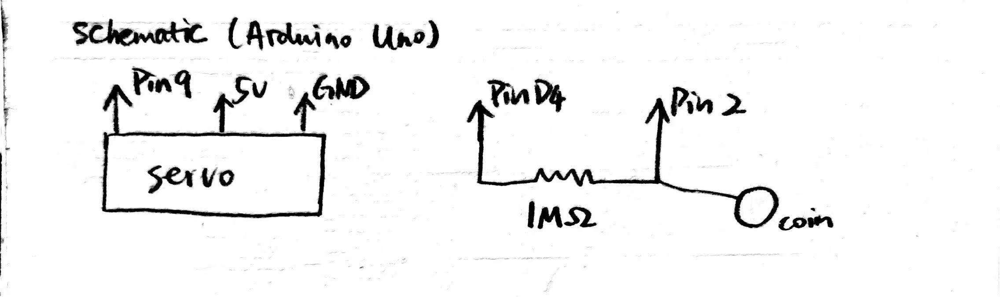
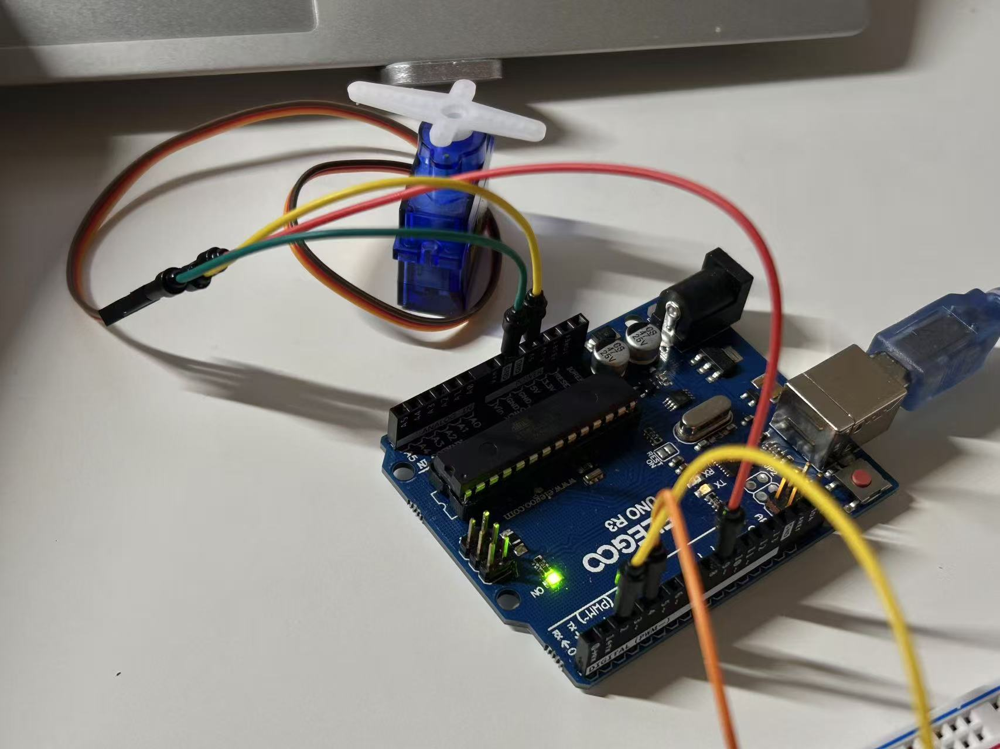
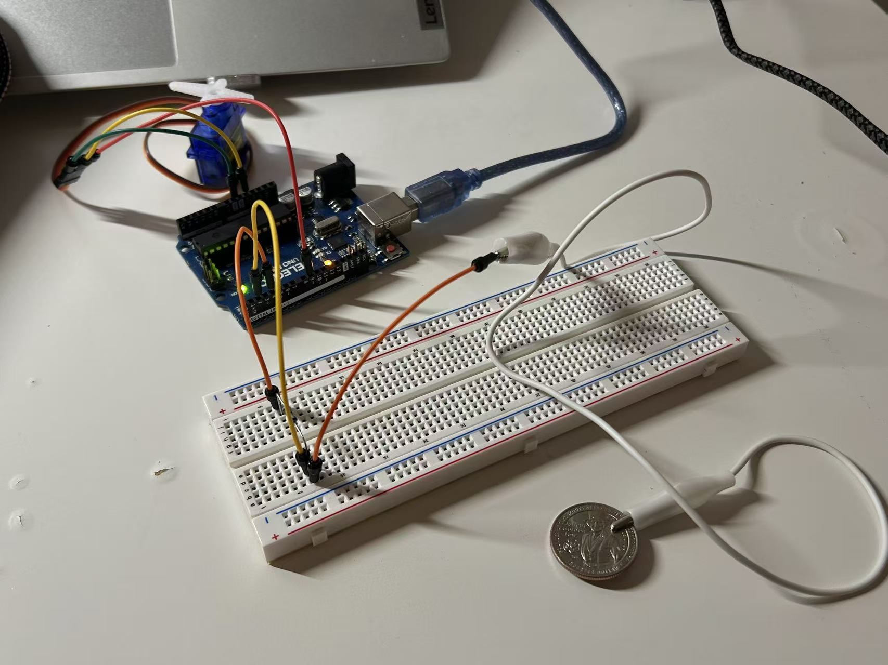
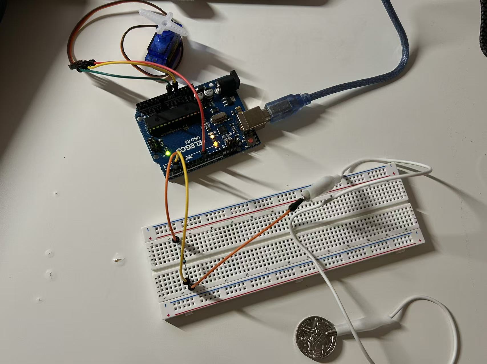
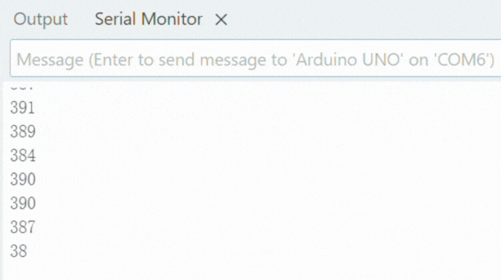
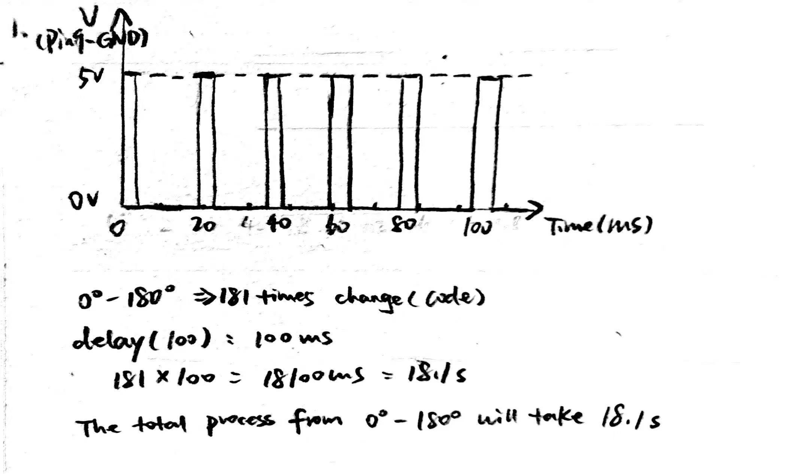

In this assignment, I built a touch-controlled servo using
a coin as a capacitive touch sensor and a servo motor as the output.
When I touch the coin, the servo rotates to 90 degrees.
When my hand releases the coin, the servo returns to 0 degrees.
I used the CapacitiveSensor and Servo libraries to control
the input and output.
1. Circuit Schematic & Components

In this circuit, Pin 4 is the send pin and Pin 2 is the receive pin.
The capacitive touch sensor uses a 1MΩ resistor between Pin 4 and Pin 2.
I use a coin connected to Pin 2 as the touch-sensitive sensor.
The servo motor is connected to Pin 9, 5V, and GND.
I used an Arduino Uno, a breadboard, a 1MΩ resistor,
a coin, jumper wires, and a servo motor.
The coin works as the input sensor by detecting changes
in capacitance when touched. The servo motor acts as
the output and rotates based on the sensor reading.
Resistor Selection
I used a 1MΩ resistor between Pin 4 and Pin 2.
Based on Lecture 8, a 1MΩ resistor is suitable for
detecting direct touch. A larger resistor would make
the sensor more sensitive to nearby objects, but could
also make the response slower.
Capacitive Touch Sensor
I used the CapacitiveSensor library to measure changes
in capacitance. Pin 4 is the send pin, and Pin 2
is the receive pin connected to the coin.
When a finger touches the coin, the sensor reading increases.
Servo Motor
The servo motor is connected to 5V, GND, and Pin 9.
I used the Servo library and servo.write() to control
its position. And I chose a range of 0 to 90 degrees.
2. Circuit & Operation



The circuit includes a capacitive touch input and
a servo motor output. The coin is connected to Pin 2,
with a 1MΩ resistor between Pin 4 and Pin 2.
The servo motor signal wire is connected to Pin 9,
and its power and ground wires are connected
to 5V and GND.
Capacitive Touch Testing
I first tested the capacitive touch sensor using
the CapacitiveSensor library and the Serial Monitor.
I initially used the wrong resistor, which caused
the sensor to continuously return 0.
After replacing it with a 1MΩ resistor,
I observed readings of approximately 150 without
touch and 2000 when touching the coin.
Circuit Operation
After testing the touch sensor, I connected the servo motor.
When the sensor reading exceeds the threshold of 1000,
the servo rotates to 90 degrees.
When the reading is below the threshold,
the servo returns to 0 degrees.

The GIF demonstrates how the servo rotates to
90 degrees when I touch the coin and returns
to 0 degrees when I release it. And the range of readings
is approximately 150 to 2000.
3. Arduino Code
// Import the CapacitiveSensor library.
#include <CapacitiveSensor.h>
// Import the Servo library.
#include <Servo.h>
// Create a capacitive touch sensor using Pin 4 and Pin 2.
CapacitiveSensor touchSensor(4, 2);
// Create a servo object.
Servo servo;
// Set the servo signal pin to Pin 9.
const int servoPin = 9;
// Set the touch detection threshold.
const long touchThreshold = 1000;
// Run once in the process of setting up the Arduino.
void setup() {
// Start the Serial Monitor at 9600 baud.
Serial.begin(9600);
// Attach the servo to Pin 9.
servo.attach(servoPin);
// Set the servo to 0 degrees.
servo.write(0);
}
// Repeat in the process of running the Arduino.
void loop() {
// Read the capacitive sensor using 30 samples.
long touchValue = touchSensor.capacitiveSensor(30);
// Print the sensor reading.
Serial.println(touchValue);
// Check if the sensor reading is above the threshold.
if (touchValue > touchThreshold) {
// Move the servo to 90 degrees when touched.
servo.write(90);
} else {
// Move the servo to 0 degrees when not touched.
servo.write(0);
}
// Wait 50 ms before the next reading.
delay(50);
}
The code uses the CapacitiveSensor library to detect
touch and the Servo library to control the motor.
I used capacitiveSensor(30) to collect sensor readings
and use if() to compare the readings with
the threshold of 1000 and servo.write() moves the motor
to either 0 or 90 degrees.
4. Additional Questions
Question 1: Voltage at Pin 9 vs. Time
Based on Lecture 8, the servo uses a 20ms control cycle,
with a HIGH pulse of approximately 1ms at 0 degrees
and 2ms at 180 degrees. The code increases the servo angle
from 0 to 180 degrees, and the complete loop takes
18.1 seconds.

The graph shows the voltage at Pin 9 over time.
The signal repeatedly switches between 0V and 5V,
while the HIGH pulse width gradually increases
as the servo angle changes from 0 to 180 degrees.
Question 2: 1% Erroneous Sensor Readings
This problem is an example of data spikes.
To address this, I would use a median filter.
I would collect three sensor readings, sort them,
and use the middle value.
This helps remove unusual outliers and prevents
incorrect readings from affecting the output.
// Collect three sensor readings.
readings = [readSensor(), readSensor(), readSensor()]
// Sort the readings.
sortedReadings = sort(readings)
// Use the median value.
sensorValue = sortedReadings[1]
Question 3: 10% Sensor Noise
This problem is high frequency noise. To address this,
I would use smoothing to reduce random fluctuations and
make the sensor readings more stable.
// Read the sensor.
sensorValue = readSensor()
// Smooth the sensor reading.
smoothedValue = smooth(sensorValue)
// Use the smoothed value.
output(smoothedValue)
Question 4: AI Usage
I used ChatGPT to understand how the CapacitiveSensor and Servo libraries work,
check my Arduino code, troubleshoot the circuit when the sensor initially returned 0.
And I asked AI to explain the data cleaning methods and provide example codes.
I designed and built the circuit, selected and connected the components, tested the sensor,
identified and replaced the incorrect resistor, collected sensor readings, and adjusted
the threshold based on my observations.